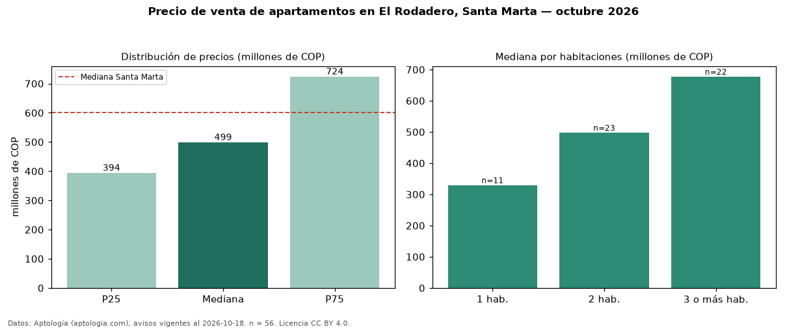

Precio de venta de apartamentos en El Rodadero, Santa Marta — octubre 2026
En El Rodadero, Santa Marta, la mediana de precio de venta de apartamentos es COP 499 millones, según 56 avisos vigentes. Eso es 17 % por debajo de la mediana de Santa Marta para apartamentos (COP 600 millones). Por metro cuadrado, la mediana es COP 6,03 millones/m² (n = 55 avisos con área), 31 % por debajo de Santa Marta (COP 8,72 millones/m²). El área mediana anunciada es 86 m². El segmento con más oferta es el de 2 habitaciones (23 avisos, mediana COP 498 millones); pasar de 1 habitación a 3 o más habitaciones cambia la mediana +105 %. La administración mediana declarada es COP 494.000 al mes (n = 39). Por precio mediano es el puesto 13 de 18 barrios de Santa Marta con al menos 30 avisos de apartamentos en venta (COP): en la franja media. La mitad central de los avisos va de COP 394 millones a COP 724 millones (razón 1,8), una dispersión moderada. Datos: Aptología (aptologia.com), CC BY 4.0 — https://www.aptologia.com/venta/santa-marta/el-rodadero. Archivos: PDF, CSV con las cifras y gráfica PNG.

| Avisos únicos | 56 |
|---|---|
| Percentil 25 | COP 394.250.000 |
| Mediana | COP 499.000.000 |
| Percentil 75 | COP 724.000.000 |
| Mediana por m² | COP 6.034.285 |
Fuente: avisos vigentes de portales inmobiliarios recopilados por Aptología, deduplicados (mínimo 30 avisos únicos por celda). Precios pedidos, no cerrados. Fecha: 2026-10-18.